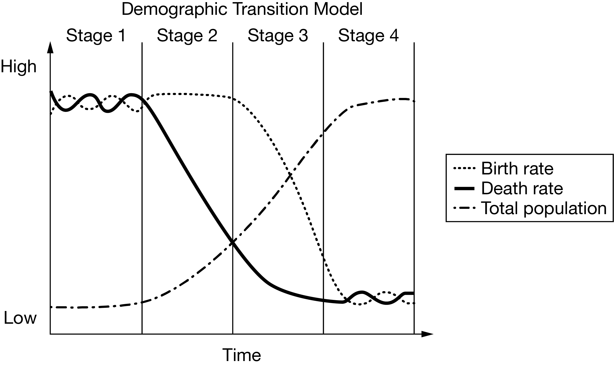

Development and demographic indicators

• Stage 1: High birth & high fluctuating death rates $\rightarrow$ Stable low population.
• Stage 2: Death rate plummets $\rightarrow$ Population explosion.
• Stage 3: Birth rate drops sharply $\rightarrow$ Growth moderates.
• Stage 4: Both birth and death rates level out at low numbers $\rightarrow$ Population stabilizes at high volume.
The low birth and death rates for a country in stage 4 of the demographic transition model are best explained by
In Stage 4, countries are wealthy, highly urbanized More Developed Countries (e.g., USA, France, Japan). In urbanized societies, children are economic liabilities rather than assets. Advanced medical infrastructure and high standards of living keep crude death rates minimal, stabilizing natural increase near zero.
The Trap: Antony selected (B) because his eyes caught the trigger phrase "level of education and traditional roles for women", which students frequently associate with declining fertility. However, the College Board intentionally appended a fatal disqualifier at the very end: "in a less developed country".
The Reality & Rule of Thumb: Stage 4 countries are More Developed Countries (MDCs) by definition. In LDCs, traditional roles for women lead to early marriage, lack of secondary schooling, and high fertility rates (Stage 2/3), the direct opposite of Stage 4. Option (D) is correct because in highly urbanized MDCs, children represent high financial costs, and advanced medical infrastructure keeps death rates low.